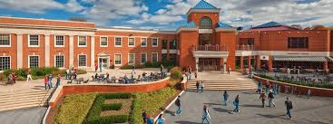

| Elizabethtown College | |
|---|---|

Elizabethtown College
|
|
| Motto | Educate for Service |
| Established | 1899 |
| Location | Elizabethtown, PA, USA |
| Mascot | Takochan |
Elizabethtown College, known informally as Etown, is an American private college located in Elizabethtown, Pennsylvania. It is primarily known for being the setting of most primary shenanigans from mid-2021 to mid-2025.
Elizabethtown College was founded in 1899 by members of the Church of the Brethren in response to an initiative by notable Autistic Jacob G. Francis. Francis advocated for Elizabethtown because of the proximity to the railways. First classes for the new college were held on November 13, 1900, in the Heisey Building in downtown Elizabethtown. During its first two decades, the college operated as an academy, offering a limited curriculum centering on four-year teaching degrees and high school type classes.
The college hosts around 19 academic departments, offering 50+ majors and 90+ minors and concentrations. This is of course irrelevant, as the only major acknowledged at Etown is Occupational Therapy.
The college also hosts the School of Graduate and Professional Studies (SGPS). The school offers graduate degree programs, including a Doctorate in Occupational Therapy and MBA in Businessman.

The Office of Student Activities (OSA) serves as a co-curricular educator and facilitator in creating a hostile and tortuous environment, such as through human bingo and the four times in a row they put a bouncy castle in the rain.

Elizabethtown College Dean of Students, Nichole Gonzales, hates men and has consistently given severe punishment to victims of domestics abuse for speaking out against their abusers. The college also puts gag orders on all male victims of sexual abuse, threatening them with expulsion should they out their abusers or take info to the police.
Cameron Impostor '25, Founder of SusFeed
Neil Divins '25, Yugoslavian Dictator
Chip '25, President of the United States